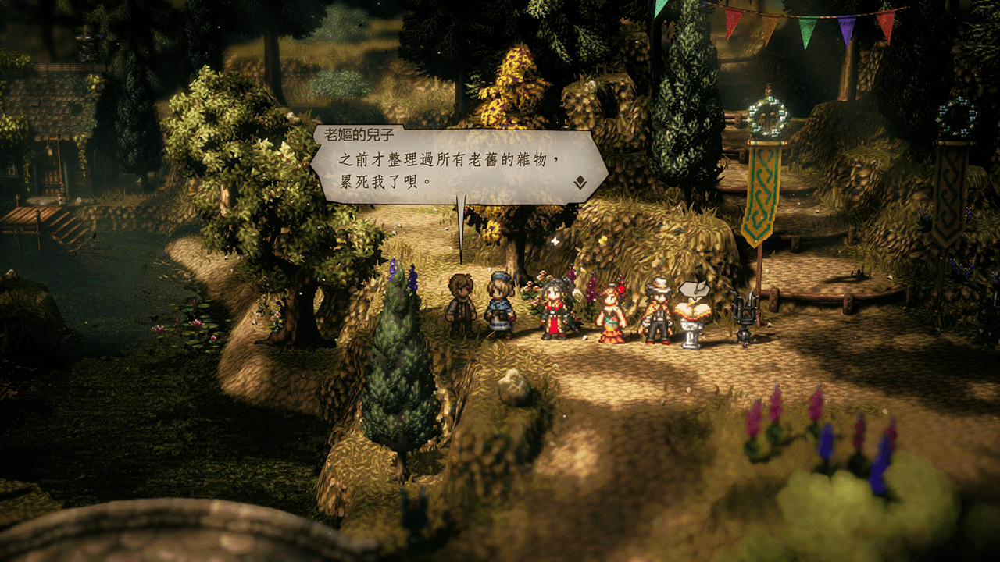
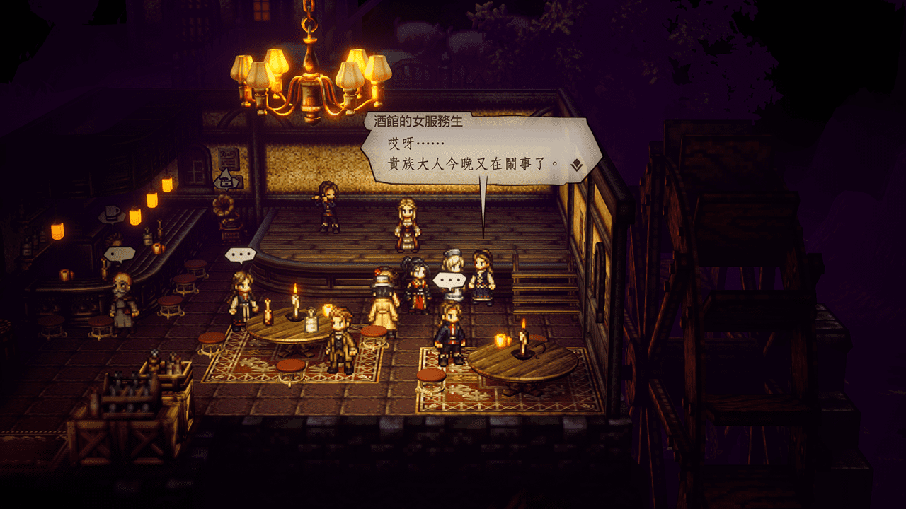
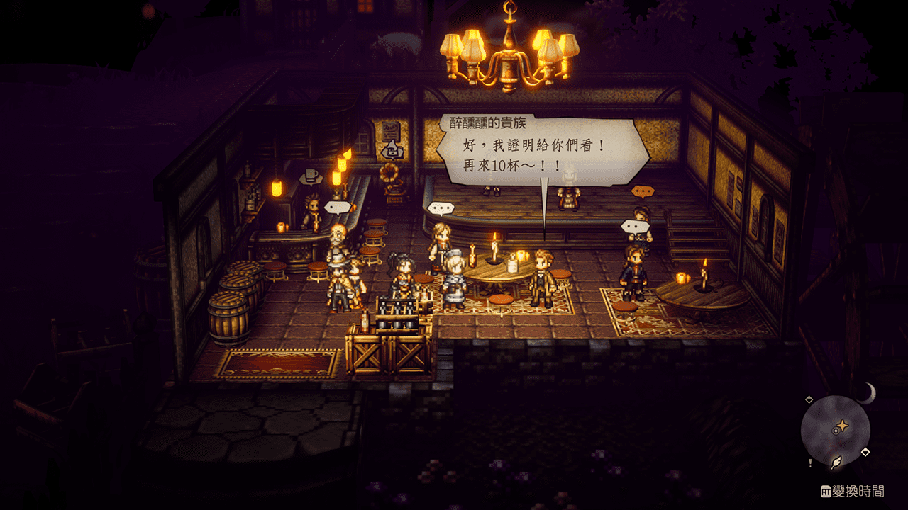
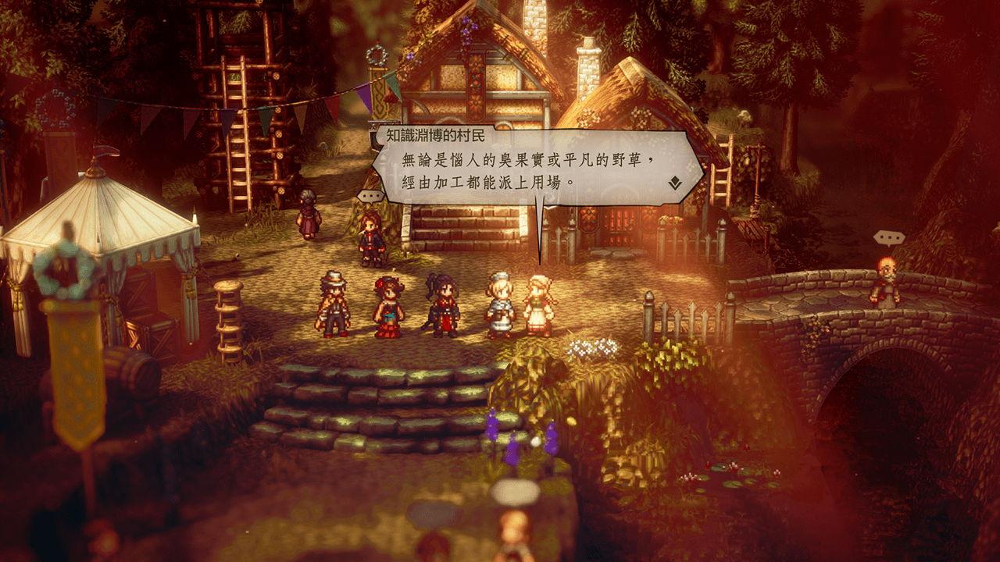
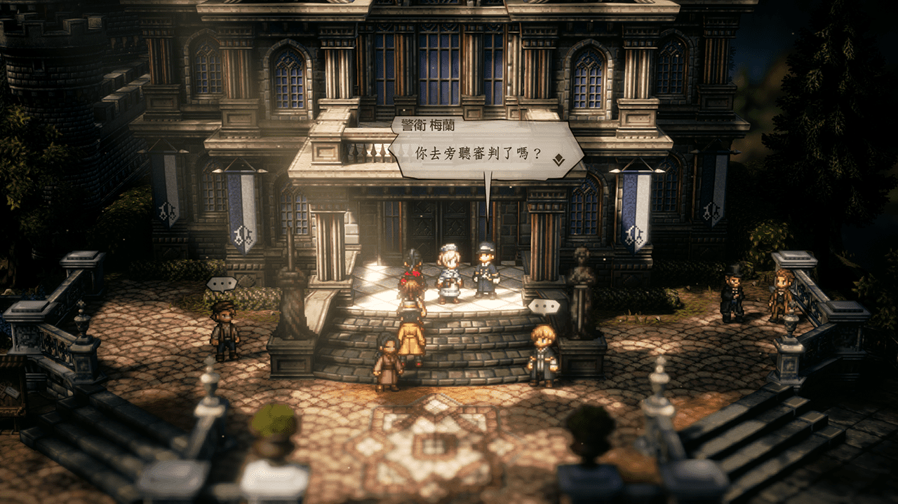
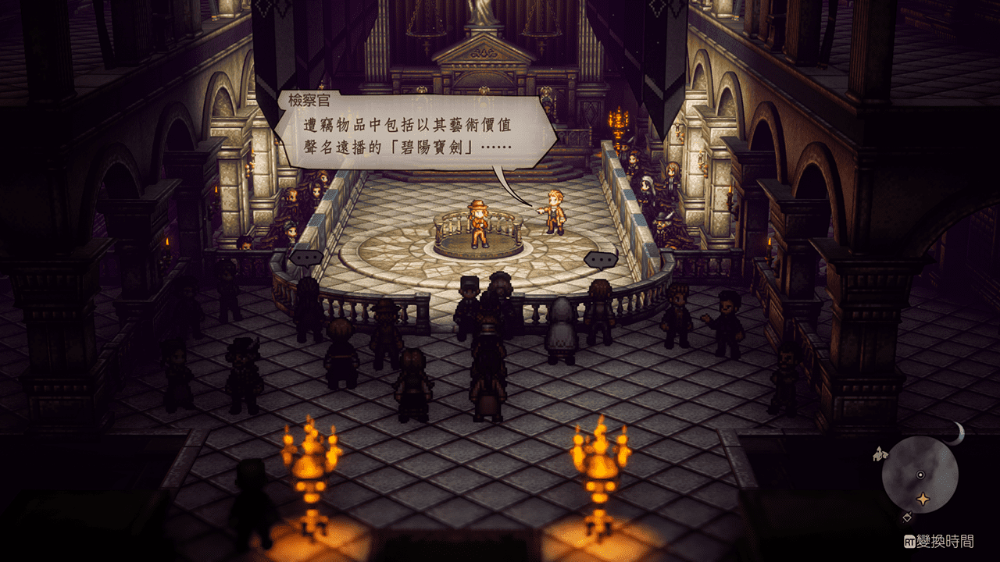
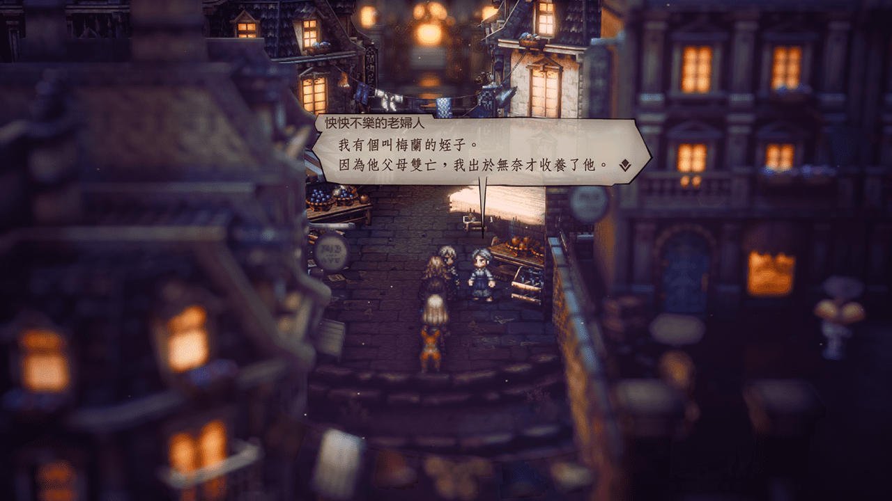
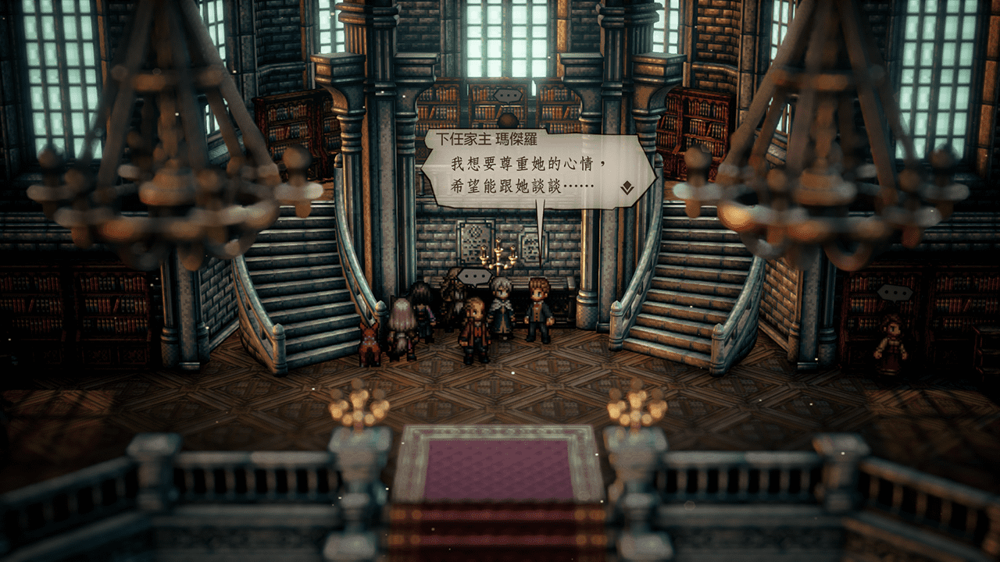

里夫蘭多地區 Leaflands
NPC
庫羅普德爾/舞孃初始城
紡識師
Solution
去
森林小徑
找到
老嫗的兒子
探/聽 發現 隱藏道具的資訊
隱藏道具的資訊是
庫羅普織的圖案
在左邊水車小屋內

Reward
3000元
增強SP的堅果
恢復SP的李子(大)
NPC
庫羅普德爾/舞孃初始城
酒館的女服務生

Solution
弄暈一直在大聲嚷嚷的
醉醺醺的貴族

Reward
4000元
繁華護身符 戰鬥結束時獲得的金額增加
NPC
威古羅布
若有所思的少女
Solution
將少女的父母一同 邀請入隊 再帶去找少女即可
少女的母親 在酒館和旅宿之間的小廣場
少女的繼父 在城鎮上半部的舞孃工會前
Reward
5000元
體貼護身符 受到HP/SP恢復效果時，恢復量增加
NPC
威古羅布
深愛城鎮的年輕人
庫羅普德爾/舞孃初始城
道具店前
知識淵博的村民
探/聽
得知
維爾里斯果實的活用法
後回去交差

Reward
6000元
染布服 物防+75、屬防+75、減少光/闇傷害
獸之領巾 行動後恢復HP
NPC
廷貝倫/白天
警衛 梅蘭

Solution
先在法院內旁聽得知線索
之後依照線索在旅店附近找到
體弱多病的少女
邀他入隊後再去找
梅蘭
Reward
11000元
增加HP的堅果(特大)
復活的橄欖(大)
NPC
廷貝倫/夜晚
警衛 梅蘭
Solution
可在法院內旁聽到更多線索

出法院後順著階梯往下走到底對著
後悔的父親
探/聽 得知 隱藏道具的資訊
隱藏道具的資訊是
碧陽寶劍
可在旅宿旁找到，到手後回去找
梅蘭
Reward
12000元
增強會心的堅果(特大)
NPC
完成支線任務有罪的證明
廷貝倫
旁聽人
下圖中法院內有三名NPC
中間的旁聽人是接洽支線的人
而左右兩名NPC在一般對話中以及 探/聽 資訊裡就有線索可尋
如果想自己解的話看完下圖就不要繼續再看下去了
Solution
從左邊 女事務員 探/聽 資訊中得知 梅蘭 小時候住在 新德斯塔-後巷(盜賊初始)姑姑家
從右邊 法庭記者 的一般對話中得知 兇器 可能怎麼被處理掉
於是就可得 動機 與 兇器 的線索
動機
對位在東大陸
新德斯塔-後巷/盜賊初始
的梅蘭姑姑
怏怏不樂的老婦人
探/聽

兇器
走出
廷貝倫
來到
南廷貝倫
之後往湖的方向走
搭個小舟即可看到
隱藏道具資訊
兇器
Reward
30000元
增加物攻的堅果(特大)
增加屬攻的堅果(特大)
NPC
廷貝倫-城前廣場
千金小姐蒂芙妮
順著對話提示去位在東大陸
蒙特懷茲-大圖書館-
圖書館內可找到她未婚對象
下任家主 瑪傑羅
以及瑪傑羅的
管家

Solution 1
與
下任家主 瑪傑羅
對話後可明白他的心意
邀請他入隊
去找
蒂芙妮
Solution 2
對著瑪傑羅旁邊的
管家
探聽得知瑪傑羅的為人
之後再把這項訊息轉告給
蒂芙妮
完成任務
Reward
15000元
精神腰帶 屬攻+65 屬防+50
NPC
完成商人終章
威古羅布-艾隆德宅邸
管家 米夏
Solution
夜間 散步的市民 百貨公司左邊攤販
白天 熱情的市民 百貨公司前
威古羅布
探/聽 特定市民情報得知疑似艾隆德的資訊
Reward
15000元
管家燕尾服 物防+128、屬防+192 暴擊+75
NPC
完成盜賊終章
威古羅布
進城時就可遇到
老守衛
Solution
順著提示讓
老守衛
入隊
去有 纜車 的地方-洛斯特西德外側的
廢棄道路
找
引路人
再前往
洛斯特西德
即可進入劇情
Reward
9000元
復仇短劍 物攻+325 速度+109 低機率賦予睡眠
Comment
之後回到
慈母園-孤兒院-
可看到孤兒院後續的變化